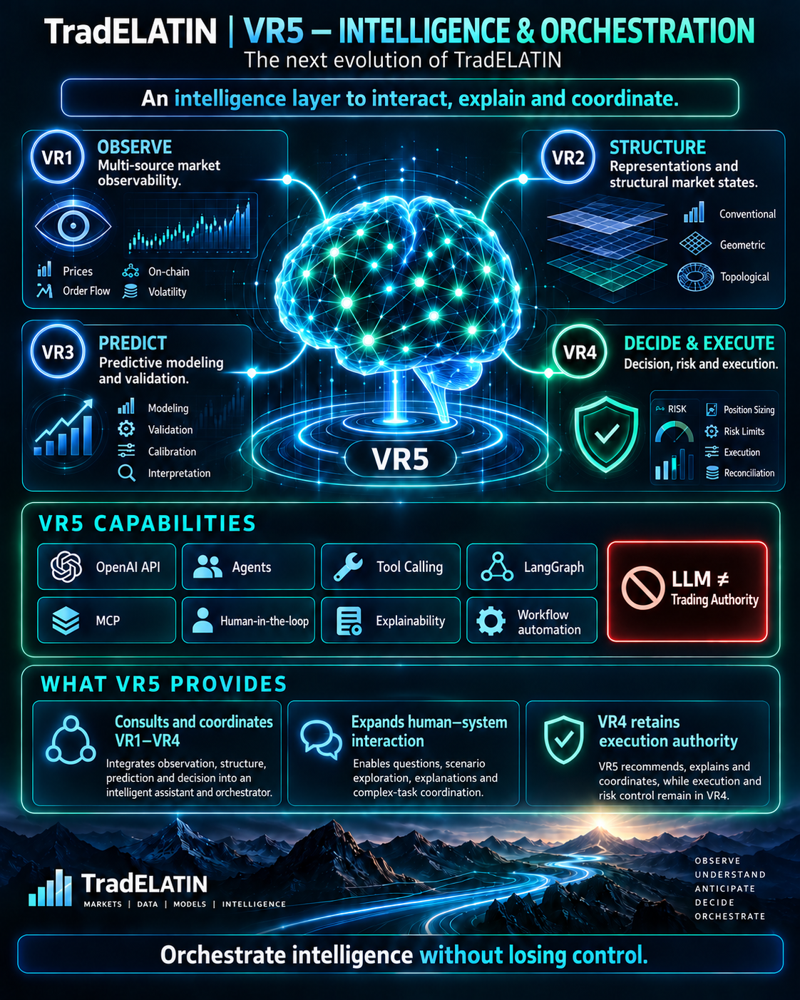

OpenAI API
Target model interface for bounded queries and explanations.
VR5 is an intelligence and orchestration layer that interacts with the existing TradELATIN architecture. It may consult, coordinate, explain, contextualize and orchestrate capabilities across VR1–VR4.
VR5 coordinates intelligence. VR4 retains execution authority.

VR5 does not replace VR1–VR4. Observations remain in VR1, structural representations in VR2, predictive information in VR3, and decisions and controlled execution in VR4.
VR5 is designed to make these capabilities accessible through supervised interaction, explanation, context and coordination. Its role is broader than a fifth serial processing stage.
The following capabilities describe the intended architecture. They are not labeled implemented; this site does not claim a deployed agent system or connected APIs.
Target model interface for bounded queries and explanations.
Target assistants with explicit roles, permissions and supervision.
Target structured requests to authorized capabilities.
Target interoperable access to explicitly exposed tools and context.
Target stateful coordination of bounded workflows.
Target approval and intervention at sensitive boundaries.
Target traceable explanations linked to source observations and versioned outputs.
Target repeatable, supervised coordination with auditability.
A user request enters VR5. Bounded requests may query or coordinate VR1, VR2, VR3 and VR4 under each layer’s interfaces and permissions.
Functional pipeline: VR1 → VR2 → VR3 → VR4
VR5 interacts with every layer. Execution authorization and execution-state transitions remain in VR4.
VR5 should expose uncertainty and missing evidence, preserve traceability and escalate sensitive actions rather than silently acquiring execution authority.
VR5 is a new intelligence and orchestration layer. The capabilities on this page are architectural targets; no production deployment, agent implementation or autonomous trading capability is claimed.